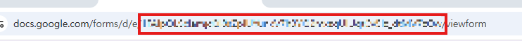
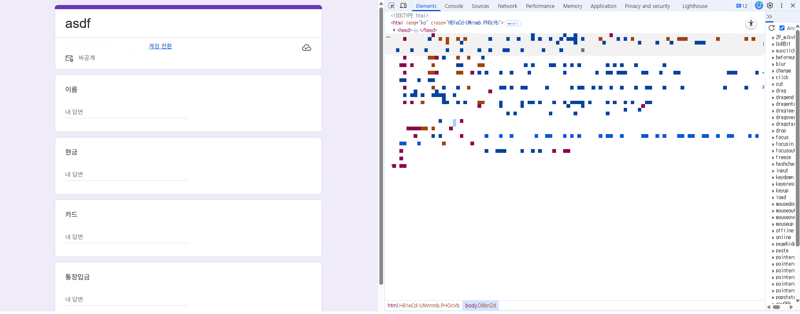
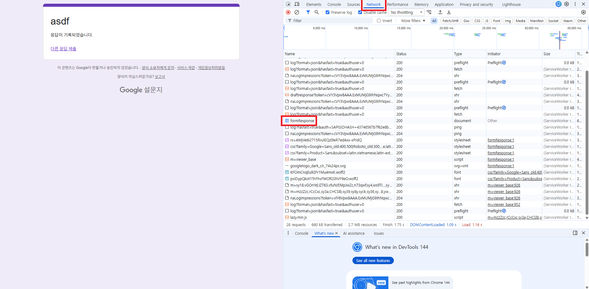

google 폼을 생성하고 google sheet와 연결한 후, 설문지 링크를 준비합니다.
링크 주소에서 e/ 다음, /viewform 이전의 텍스트를 복사한 다음, "form ID를 입력" 칸에 입력합니다.
설문지 화면에서 F12 버튼을 눌러 개발자 옵션 창을 엽니다.
개발자 옵션 창의 "network" 탭을 열고, 설문지에 아무 응답이나 기록한 다음, 아래 표시되는 formResponse를 클릭합니다.
"Payload" 탭으로 들어가 entry.xxx로 표시되는 숫자를 복사한 다음, "entry 숫자를 입력" 칸에 입력합니다.